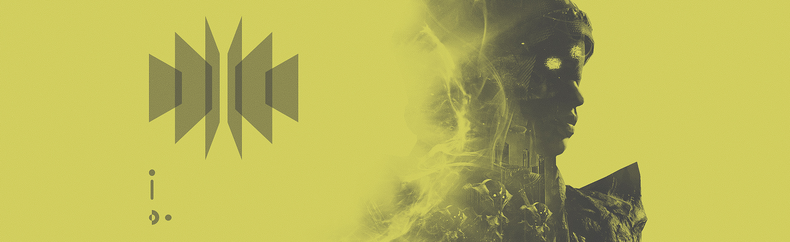

Written from the perspective of Eris Morn
The days have become indecipherable. This harsh plane of existence bears only Darkness and cold—two things I’ve become reacquainted with since my banishment to this hellscape. No matter where I run, the glowing orb follows. It stalks me.
I’ve taken to quietly humming a tune to stave off the madness. I don’t enjoy it, but it helps. It’s worked before, when I was trapped beneath the Moon’s surface. Taken and Hive run rampant here. Around every corner. I’m in no shape to defend myself. My mind fights to stay alert. I just need to rest. Just a little…
A bright light awakens me. That glowing orb? Its radiance calls out to me.
No. Stop it. I’m losing my grip again. Hum the song.
Toland the Shattered (presumably): “Eris!”
You’re making it up. Or worse. It’s the Witch again.
T: “Eris!”
The orb approaches. Could it be?
I stand to meet the light. And I collapse into darkness.
I am awake, I believe—though this feels like a dream.
T: “You encountered the Witch-Queen and survived.”
I am not sure if this conversation with Toland is real or a figment of my imagination.
Eris Morn: “I’m no closer to discovering their machinations.”
T: “Tell me, what did she say?”
E: “It was riddles… taunts. She used you, all of you, perverting your voices… I was close to something. Beneath the surface. Slumbering.”
T: “Intriguing.”
Either way, I am in need of an exit. I must continue, no matter the pain.
T: “Where do you think you’re going? You’re in no shape to move.”
E: “I have to. I need to.”
T: “Are you telling yourself this to motivate, or are you blinded by your obsession?”
Now I am sure he is real.
T: “Aren’t you curious what was slumbering down there? I know I am.”
He piques my interest. I’ll allow this momentary reprieve.
E: “Go on.”
T: “Our time in the Hellmouth… requires further examination. I’ve often thought back to our glorious failure. Something has never sat right with me.”
E: “I imagine dying would leave one unsettled.”
T: “True, but this lies beyond that void. Our fireteam was comprised of some of the best to ever wield the Light, and yet we were eviscerated with ease.”
E: “They had weapons… we were not prepared.”
T: “While true, does the circumstance not bother you?”
E: “It haunts me to this day. I hesitate to believe anything She would say.”
T: “But why would She say anything at all?”
Why indeed.
E: “…She means to guide me, Toland.”
T: “Do not play into Her hand.”
E: “You lend credence to Her riddles. We must know the truth, no matter the cost.”
T: “Tread lightly, Eris. Or you may end up like me yet. Or worse!”
E: “My charge is the same, as always.”
T: “I’m afraid so.”
E: “There must—”
A flash of light, and once again I cannot see. I hear Toland call out to me, but I am pulled from him, from there.
It’s warm now. And bright. So bright.
*CLICK*
I can feel their guns on me.
I’m surrounded.